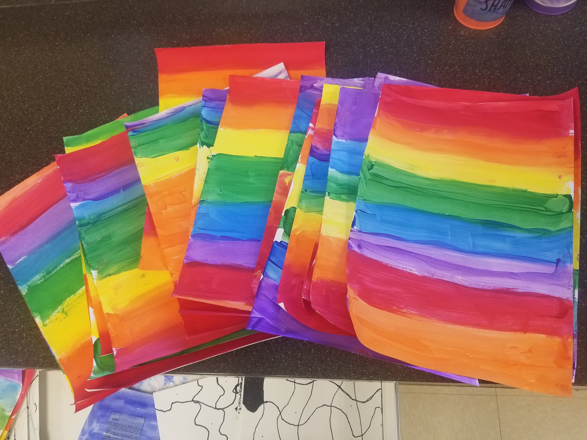

Welcome to the website for art at Heritage Elementary! Here, you can find the amazing projects we are working on, scroll through last projects, view our lessons and learning targets, and find great art education resources! I hope you enjoy our page!
Recent Projects
2nd Grade Op Art Rainbows
The 2nd graders painted an entire piece of paper in all of the rainbow colors. They practiced neat painting techniques and worked on blending and smoothing their paint colors. Next week we will start drawing black and white Op Art to put on top of our rainbow!

Check back next week for updates on our crazy week of color!!